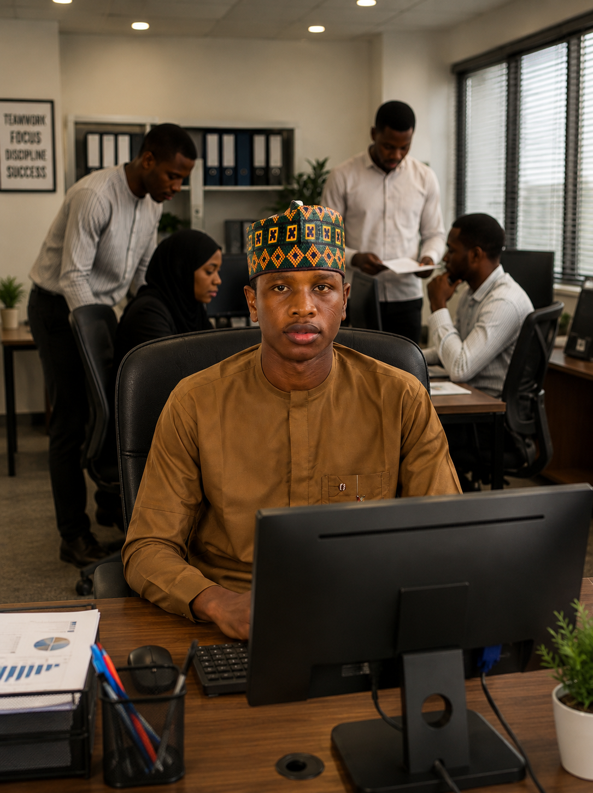

Welcome to my personal website.

IT Professional | Full-Stack Web Developer | Solar Solutions Expert
I am a dedicated Information Technology student at Bayero University Kano (BUK), passionate about solving real-world problems through code and hardware.